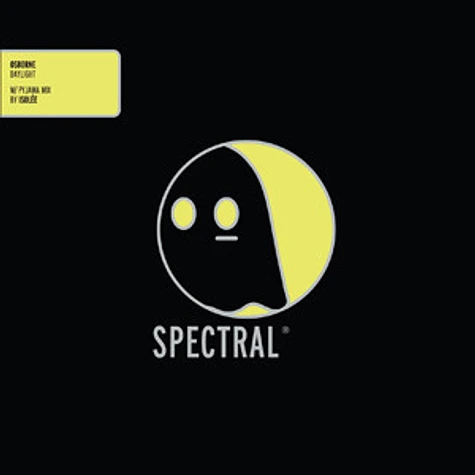

Releases


Bodycode - Immune

Kate Simko - Take you there

Osborne - Daylight
Fan site.
Spectral Sound was formed in 2000 as the Ghostly International label [sister-label of Spectral Sound] was moving toward more experimental and pop releases. Keeping the label's dance-floor roots growing, Spectral focuses on moody, leftfield techno/house and showcases the music of area artists like Matthew Dear, Osborne, James Cotton and Hieroglyphic Being. Spectral has also worked with some of America's best producers at the remix/reconstruction level, including Germany's Reinhard Voigt (Kompakt) and Pantytec (Perlon), LA's David Alvarado, Virginia's Bryan Zentz and NYC's John Selway. With releases as diverse as acid house workouts to glitched-out dub tracks, the Spectral Sound imprint strives to find the perfect balance between retro and future, art and dance.
Bodycode - Immune
Kate Simko - Take you there

Osborne - Daylight